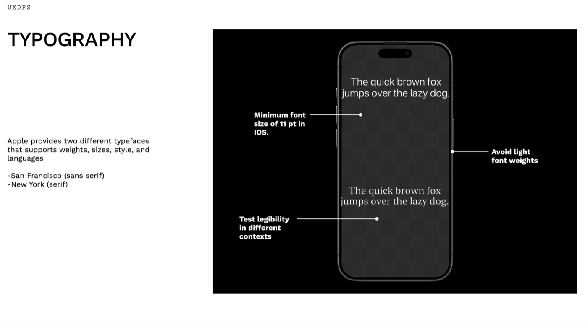

A mobile toolkit for designing on iOS
Most iOS accessibility failures aren't oversights — they're rules nobody wrote down before the build started. This is the reference I wanted: spacing, type, targets, and accessibility, in the order you actually need them.

Why write it down
Designing for iOS means working inside a system that already has opinions — about spacing, about type, about how big a thing has to be before a thumb can reliably hit it. Knowing those opinions early is the difference between a design that ships and a design that gets rebuilt. I put the ones that come up constantly into a single reference.
Spacing, alignment, measurement
- Prefer graphical images over photographs — they hold detail at small sizes.
- Use text only where it's essential to the design.
- Design app icons at 1024 × 1024 and let the system scale down to 180 × 180 or 120 × 120, rather than designing each size by hand.
- Use alignment deliberately: it's what creates organisation and visual hierarchy.
- Notate guides and safe areas in the in-app designs, so nothing lands under a notch or a home indicator.
Typography
Apple ships two typefaces that carry weights, sizes, styles, and language coverage: San Francisco (sans serif) and New York (serif). The constraints that matter:
- An 11 pt minimum font size on iOS.
- Avoid light weights — they collapse in bright light and on lower-contrast displays.
- Test legibility in different contexts, not just against the artboard background.
Interactive elements
- Prefer the system-provided components — the switch, for instance — and follow the specific guidelines for anything custom.
- Hit targets need to be at least 44 × 44 pt.
- Keep button styling in a consistent hierarchy, so importance is legible at a glance.
- Add a visual indicator alongside colour, so meaning survives for people who are colour blind.
Accessibility considerations
Two principles carry most of it: simplicity — support familiar, consistent interactions so complex tasks stay simple — and perceivability — all content should be perceivable whether someone is using sight, hearing, or touch. Avoid complex gestures for common interactions, audit and test the app for accessibility rather than assuming, and take user feedback seriously.
Stark handles the mechanical part: contrast checking, typography and touch target scanning, a vision simulator, and annotation for alt text, focus order, headings, and landmarks. Apple also publishes templates for the foundations of an app, and Figma plugins for typography, buttons, and guides.